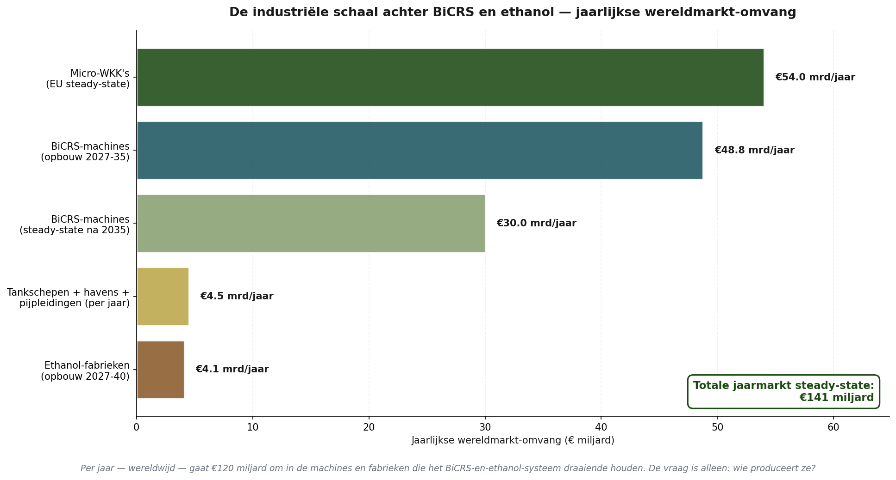
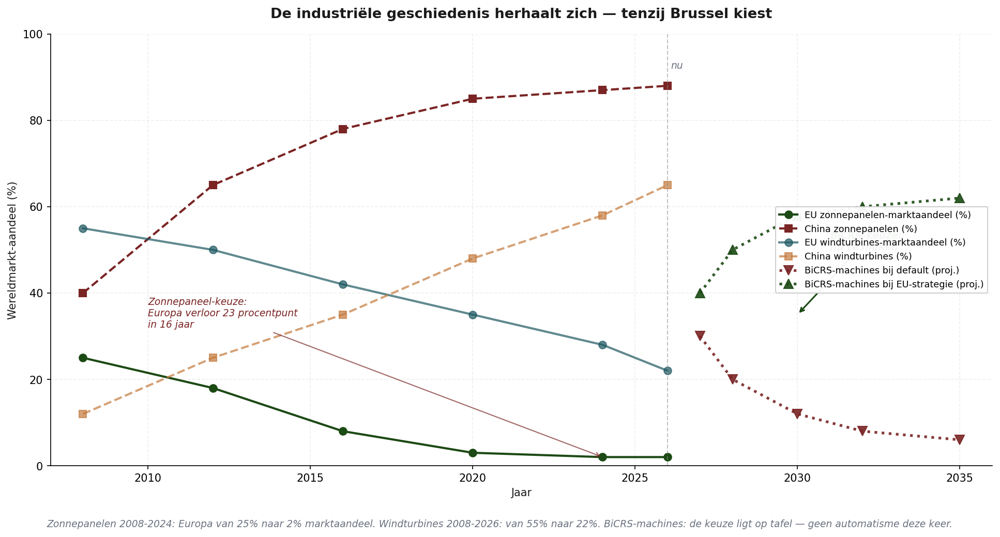
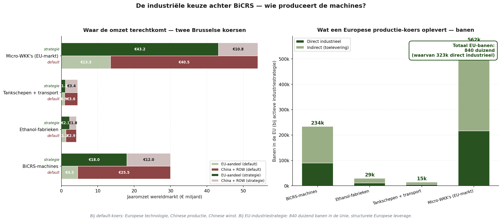
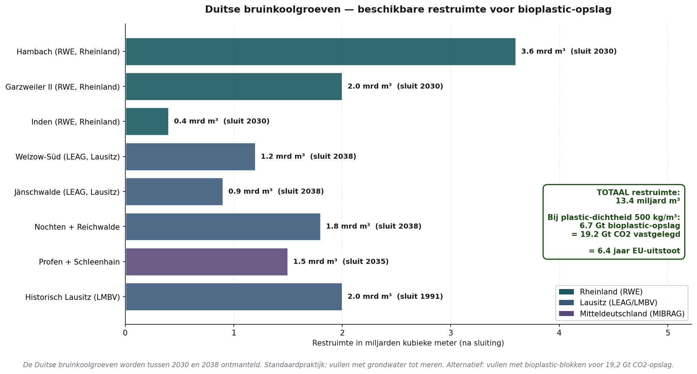
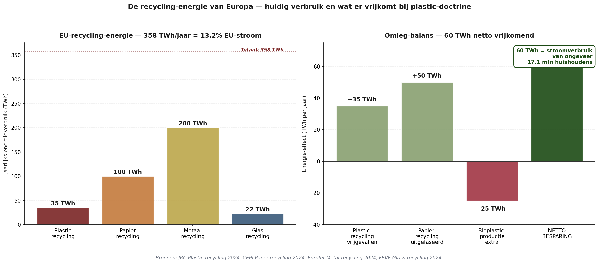

De oorspronkelijke Brusselse Gevolgenkaart toonde de prijs van Brussels huidige klimaat- en industriebeleid: een nettoverlies tussen vijf en vijftien procent voor de gemiddelde Europese burger of bedrijf tegen 2030. Het was een schadekaart.
Dit stuk toont wat er gebeurt wanneer Brussel niet langer kiest voor schade. Wanneer Green Deal en CBAM — de twee kostbaarste mechanismen — worden vervangen door één enkel instrument: BiCRS (een product van Carbon-Alert Ltd) via anoxische biomassa-injectie, volledig geproduceerd in de equatoriale band, tegen veertig euro per ton CO₂. Hetzelfde klimaatdoel, een fundamenteel andere uitkomst.
De vraag is niet langer: hoeveel schade lijdt de Europese welvaartsbasis door Brussel? De vraag wordt: hoeveel winst genereert Europa door Brussel? Het antwoord, modelmatig, is een netto-effect van plus 23 tot plus 106 procent per scenario tegen 2030. Niet omdat klimaatbeleid is opgegeven, maar omdat klimaatbeleid is geherontworpen — en omdat de productie wordt gevestigd waar de plant groeit, niet waar de boekhouder zit.
Wat BiCRS-via-anoxische-biomassa-injectie is
BiCRS staat voor Biomass Carbon Removal and Storage. In de variant die dit stuk modelleert is het mechanisme verbluffend eenvoudig: tropische biomassa wordt op equatoriale gronden geteeld en geoogst. Vervolgens wordt de geoogste biomassa op het veld zelf via een speciaal celwand-aantastend proces vloeibaar gemaakt — het intracellulaire water wordt vrijgemaakt zodat de plantmassa overgaat in een dikke, pompbare vloeistof. Deze vloeistof wordt direct ter plekke, pal onder de wortels van het gewas dat haar produceerde, via injectiebuizen ondergronds gebracht op een diepte van 1,2 tot 1,4 meter.
Er is geen transport. Geen vrachtwagen, geen tanker, geen opslagloods, geen logistieke keten tussen oogst en opslag. De biomassa-vloeistof wordt geïnjecteerd in dezelfde bodemkolom waaruit zij is opgegroeid — onder dezelfde wortels die haar volgende seizoen weer produceren. Dit maakt de operatie tot een gesloten kringloop op hectare-niveau: planten, oogsten, vloeibaar maken, injecteren, opnieuw planten. Geen molecuul koolstof verlaat het perceel.
Op die diepte is geen zuurstof aanwezig. Zonder zuurstof is bacteriële oxidatie van plantmateriaal niet mogelijk. Het resultaat is dat de geïnjecteerde biomassa-vloeistof een proces doormaakt dat lijkt op natuurlijke veenvorming, maar dan versneld en met homogene verdeling: tussen 90 en 95 procent van de plant-koolstof blijft permanent — honderden jaren — vastgelegd in de bodem onder de plantage.
Dit is geen BECCS — er wordt niets verbrand, er is geen capture-installatie, geen rookgasstroom. Dit is geen biochar — geen pyrolyse, geen warmte-input. Het is ook geen gas- of CO₂-opslag onder druk in geologische formaties op afstand. Het is een fundamenteel eenvoudiger mechanisme: vloeibaar gemaakte biomassa wordt in-situ, onder de eigen wortelzone van de plant, ondergronds verspreid, waarna anoxische veenvorming de koolstof permanent vastlegt.
De economische sleutel is precies die eenvoud. Er is geen energiefabriek nodig, geen carbon-capture-installatie, geen pijpleidingnetwerk, geen geologisch reservoir-onderzoek, geen transportvloot. Alleen biomassa kweken, op het veld vloeibaar maken via het speciale celontsluitings-proces, en ter plekke injecteren op een diepte die met standaard agrarische apparatuur bereikbaar is. De vloeibare staat is wat het systeem schaalbaar maakt: vloeistoffen laten zich pompen, doseren en homogeen verdelen op een manier die vaste biomassa niet toestaat — en de in-situ-werking is wat het kostencompetitief maakt, omdat de logistieke laag volledig wegvalt.
Waar BiCRS kan — en waarom alleen daar
Een fundamenteel gegeven dat dit stuk leidend maakt: de plant die de yields oplevert die BiCRS economisch rendabel maken, groeit uitsluitend in de equatoriale klimaatzone. Drie voorwaarden zijn cumulatief noodzakelijk:
• Voldoende zonlicht — jaarrond, zonder seizoensvariatie
• Voldoende water — regelmatige neerslag of beschikbare irrigatie
• Temperatuur boven 6 graden Celsius — onder deze drempel sterft de plant
Dit betekent dat productie binnen Europa simpelweg niet rendeert. Niet in Zuid-Spanje, niet in Sicilië, niet in Roemenië. Europese alternatieven zoals Miscanthus halen hooguit honderd tot honderdtien ton CO₂ per hectare tegen vijftig tot zestig euro per ton — de helft van het tropische rendement tegen vijftig procent hogere prijs. De vergelijking is doorgerekend en wijst eenduidig: honderd procent equatoriale productie is economisch én klimaattechnisch superieur.
De productie ligt in de equatoriale band tussen 10 graden noorderbreedte en 10 graden zuiderbreedte — een gebied van ongeveer 5 miljard hectare. Europa's rol verandert daardoor fundamenteel: van producent naar investeerder, afnemer en contractpartner. Dit is geen handicap — het is een strategische kans. Het maakt het BiCRS-systeem tot een hernieuwde Europees-Afrikaans-Aziatische economische as, vergelijkbaar met hoe de zonne-energie-revolutie de Chinees-Europese as definieerde in de jaren 2010.
De rekensom — 200 ton CO₂ per hectare per jaar
Onderstaande berekening volgt de vaste plantfysiologische ratio's en is in elke wetenschappelijke standaard verifieerbaar.
Verse biomassa per hectare per jaar: 400 ton
× droge-stof-fractie (22-25%, gem. 23,5%): 94,0 ton droge stof/ha
× koolstof-fractie (46-48%, gem. 47%): 44,2 ton C/ha (totaal in plant)
× behoud onder anoxische condities (92,5%) 40,9 ton C vastgelegd/ha
× moleculaire verhouding CO₂/C (3,666): 150 ton CO₂/ha (boven grond)
+ wortelmassa permanent in bodem (25%): 50 ton CO₂/ha (onder grond)
Totaal per hectare per jaar: 200 ton CO₂/ha
Honderdvijftig ton CO₂ per hectare wordt actief opgeslagen via biomassa-injectie. Vijftig ton komt automatisch van de wortelmassa die na de oogst in de bodem tussen nul en twee meter diepte achterblijft — een natuurlijke opslagvorm die geen verdere ingreep vergt. Beide samen leveren tweehonderd ton per hectare per jaar.
Schaal — wat de wereld en Europa nodig hebben
Vermenigvuldig dit cijfer met wereldwijde en Europese implementatie en de orde van grootte wordt zichtbaar:
Wereldwijde CO₂-emissie 2024: 37 Gt CO₂/jaar
Hectare nodig voor wereld-netto-nul: 185 miljoen hectare
als % van wereld-landoppervlak: 1,25%
als % van equatoriale band: 3,7%
Hectare nodig voor EU-netto-nul: 14 miljoen hectare
ter vergelijking — Griekenland: 13,2 Mha
als % EU-landbouwgrond geraakt: 0% — geen
Voor Europese netto-nul: veertien miljoen hectare equatoriale productie. Een gebied iets groter dan Griekenland — maar verdeeld over zes tot acht leverancier-landen om geopolitieke afhankelijkheid van één land te vermijden. Cruciaal: nul procent van de Europese landbouwgrond wordt aangetast. Geen voedselconflict, geen ruimteclaim binnen Europa, geen concurrentie met Europese akkerbouw. Europa koopt de capaciteit in waar zij geleverd kan worden — de equatoriale band — en betaalt daarvoor een transparante prijs van veertig euro per ton CO₂.
Strategische partnerafspraken — de Europees-equatoriale alliantie
Honderd procent equatoriale productie betekent dat de hele Europese BiCRS-uitvoering rust op contracten met partnerlanden. Dat klinkt als een kwetsbaarheid; in werkelijkheid is het de kracht van het model. Een dubbel-zijdig belang — Europa krijgt klimaatzekerheid, de partnerlanden krijgen langdurige hoogwaardige exportinkomsten — schept de stabielste denkbare basis voor langetermijn-samenwerking. Dit is geen ontwikkelingshulp, en geen koloniaal extractiemodel. Het is een gestructureerde commerciële alliantie met expliciete ontwikkelings-component.
Zes tot acht partnerlanden — het portfolio
Het Brusselse aanbod betreft veertien miljoen hectare aan biomassa-productie. Geen enkel land levert meer dan twintig procent van het totaal — een harde diversificatie-grens, leerstuk uit de Russische-gas-crisis van 2022. De voorgestelde verdeling:
Congo-Kinshasa + Congo-Brazzaville: 2,8 Mha (20%)
Brazilië (Amazone-rand, gedegradeerd): 2,8 Mha (20%)
Indonesië (Sumatra, Kalimantan): 2,1 Mha (15%)
Nigeria (Midden-Belt): 1,4 Mha (10%)
Ghana + Ivoorkust: 1,4 Mha (10%)
Maleisië (Sabah, Sarawak): 1,4 Mha (10%)
Filipijnen + India-zuid + overig: 2,1 Mha (15%)
Totaal portfolio: 14,0 Mha (100%)
Elk van deze landen heeft beschikbare gedegradeerde landbouwgrond — voormalig oliepalmplantages, uitgeputte cacao-velden, achtergelaten savanne-akkerbouw — die zonder regenwoud-conversie kan worden ingezet. Afrika alleen heeft volgens FAO-schatting circa 400 miljoen hectare gedegradeerde landbouwgrond. Het portfolio raakt niet eens vier procent van die voorraad.
Het contractmodel — hybride staat-bedrijf
De contracten zijn hybride. Brussel onderhandelt het kaderverdrag met het partnerland — looptijd, prijsondergrens, ontwikkelings-component, monitoring-protocol. Binnen dat kader voeren private operators (Europese biomassa-bedrijven, lokale joint ventures) de productie uit. Dit combineert het voordeel van staats-zekerheid met de efficiëntie van commerciële exploitatie.
Vier kernelementen per kaderverdrag:
Eén — looptijd vijftien tot vijfentwintig jaar. Korter werkt niet: BiCRS vergt grondvoorbereiding van twee tot drie jaar voor de eerste oogst. Geen leverancier zal de investering doen zonder zekerheid van afzet over de levensduur van de plantage. Een vijfentwintig-jarig contract op veertig euro per ton biedt die zekerheid — én sluit het partnerland mee aan op een traject dat hen structureel verbindt met de Europese economie.
Twee — gegarandeerde minimumprijs in euro, met indexering voor inflatie. Veertig euro per ton CO₂ is het uitgangspunt; bij stijging van de Europese ETS-vergelijkingsprijs deelt de leverancier in een vastgestelde percentage van de meeropbrengst. Bij daling van de ETS-prijs blijft de bodem van veertig euro intact. Dit voorkomt de cyclische prijsschommelingen die palmolie, cacao en koffie tot kwetsbare exportproducten hebben gemaakt.
Drie — verplichte ontwikkelings-component. Tien procent van de Europese betaling loopt niet naar de operator, maar naar een lokaal ontwikkelingsfonds met gemengd bestuur — partnerlandregering, leveranciersgemeenschap, Europese vertegenwoordiging. Dit fonds bouwt scholen, klinieken, landbouwextensie-diensten en wegen. Het maakt het BiCRS-contract politiek aanvaardbaar binnen het partnerland — en juridisch verdedigbaar tegen Westerse non-gouvernementele organisatie-kritiek.
Vier — strikte uitsluiting van primair regenwoud. Onafhankelijke satelliet-monitoring via Copernicus en Planet Labs. Bij vastgestelde overtreding: contractboete plus tijdelijke afnamestop. Dit is geen sluitende garantie — geen enkele controle is dat — maar het is het hoogst denkbare niveau van due diligence dat met huidige technologie haalbaar is. Productie uitsluitend op gedegradeerde landbouwgrond, savannegebieden en braakliggende industriële zones.
Wat de leverancier-landen krijgen — de cijfers
Voor een Congolese boer die een hectare omschakelt van cassave (huidige inkomensbron: circa €300 per hectare per jaar) naar BiCRS-biomassa onder contract: tweehonderd ton CO₂ × veertig euro = achtduizend euro bruto. Na operator-marges, injectie-apparatuur-afschrijving en bedrijfskosten houdt hij naar schatting twee- tot drieduizend euro netto over. Dat is zeven tot tien keer zijn huidige inkomen — een transformatieve verschuiving voor het rurale Congolese huishouden. Omdat de injectie op zijn eigen perceel gebeurt, hoeft hij geen biomassa te vervoeren — de mobile celontsluitings- en injectie-apparatuur komt naar hem toe, niet andersom.
Op landniveau: Congo-Kinshasa met 2,8 miljoen hectare onder BiCRS-contract ontvangt jaarlijks 2,8 Mha × 200 t × €40 = 22,4 miljard euro bruto. Dat is ongeveer twintig procent van het huidige Congolese BBP — een instroom op schaal vergelijkbaar met de petroleum-exporten van Nigeria of Angola, maar via een hernieuwbare en geografisch verspreide bron. Voor Indonesië met 2,1 Mha komt dit op 16,8 miljard euro per jaar; voor Brazilië op 22,4 miljard voor de Amazone-rand-component.
Dit is geen liefdadigheid. Het is een commerciële relatie waarin het partnerland geleverd waar het comparatief voordeel heeft (klimaat, zonlicht, water) en Europa betaalt waar zij comparatieve nood heeft (klimaatbeleid, industriële competitiviteit, energie-onafhankelijkheid). Het is precies het soort verbinding dat de dekolonisatie van de jaren zestig nooit heeft kunnen invullen — een duurzaam Noord-Zuid-economisch verband zonder schuldslavernij of structurele-aanpassings-pakket.
Politieke route — Brusselse ratificatie partnerschap voor partnerschap
Praktisch beginnen drie of vier voorhoede-contracten in 2027-2028 met de meest stabiele en best-bestuurde partnerlanden — bijvoorbeeld Ghana, Ivoorkust, Brazilië (staten Pará en Tocantins met sterke gouverneurs), en Indonesië (provincies Sumatra-Noord en Kalimantan-Zuid). Deze ankercontracten dienen als pilot-format voor de overige partnerlanden. Vervolgens worden Congo-Kinshasa, Congo-Brazzaville, Nigeria, Maleisië en de Filipijnen toegevoegd in de tweede golf (2028-2029).
Brusselse ratificatie verloopt per kaderverdrag via Raad-besluit met gekwalificeerde meerderheid, na advies van het Europees Parlement. Niet via associatie-akkoord met unanimiteit — dat is procedureel niet nodig en zou het systeem politiek blokkeerbaar maken door één tegenstemmende lidstaat. BiCRS-contracten zijn commerciële afnameverbintenissen onder klimaat- en handelsbevoegdheid van de Unie, niet politieke alliantieverdragen.
Bio-ethanol als gescheiden tweede spoor
Naast BiCRS bestaat een tweede equatoriale biomassa-toepassing: bio-ethanol-productie. Het is cruciaal te onderstrepen dat dit twee fundamenteel verschillende sporen zijn, volledig vrij van elkaar. Het zijn geen twee-producten-uit-dezelfde-oogst. Een hectare is óf BiCRS-hectare, óf ethanol-hectare. De biomassa, de bedrijfsvoering, de infrastructuur en de waardeketen zijn voor beide sporen verschillend.
Twee gescheiden routes
BiCRS-route. Mobile celontsluitings- en injectie-apparatuur komt naar het perceel. De biomassa wordt ter plekke vloeibaar gemaakt en pal onder de eigen wortels geïnjecteerd. Geen transport, geen fabriek, geen logistieke keten. De koolstof blijft definitief in de bodem onder het gewas. Dit is in-situ-economie.
Ethanol-route. De geoogste biomassa wordt met vrachtwagens vanaf de plantage naar een grote vergistings- en distillatiefabriek getransporteerd. Die fabriek staat ter plaatse in het equatoriale productiegebied — doorgaans binnen vijftig tot honderd kilometer van de teeltvelden, vergelijkbaar met de logistiek van een Braziliaanse suikerrietfabriek. In de fabriek wordt de biomassa verwerkt tot bio-ethanol. De ethanol verlaat het equatoriale productieland via tankschepen richting Europese havens. Dit is fabrieks-economie.
De keuze tussen beide routes wordt per regio gemaakt op basis van grondkwaliteit, watertoegang, afstand tot havens, bestaande verwerkingsinfrastructuur en het investeringsklimaat in het partnerland. Een BiCRS-cluster bestaat uit verspreide plantages met mobiele injectie-apparatuur die van perceel naar perceel reist tijdens het oogstseizoen. Een ethanol-cluster bestaat uit een industriële fabriek met een ring van toeleveringsplantages er omheen — typisch tien- tot vijftienduizend hectare per fabriek.
Klimaattechnisch verschil tussen de twee sporen
BiCRS verwijdert koolstof permanent uit de atmosfeer. De plant vangt CO₂ op tijdens groei; de injectie legt die koolstof voor honderden jaren vast in de bodem. Netto-resultaat: minder CO₂ in de atmosfeer dan voor de cyclus. Dit is de mechaniek waarop het netto-nul-doel van het Brusselse model rust.
Het ethanol-spoor is klimaattechnisch neutraler. De plant vangt tijdens groei CO₂ op, en de verbranding van de ethanol in Europese motoren laat dat CO₂ weer vrij. Het is een gesloten korte-termijn-koolstofkringloop, vergelijkbaar met houtkachel-economie maar dan industrieel geschaald. Klimaatwinst komt uit het vervangen van fossiele brandstof — niet uit het verwijderen van bestaande atmosferische koolstof. Dat doet alleen BiCRS.
De Brusselse portefeuille-keuze in dit stuk: het volledige equatoriale BiCRS-portfolio van veertien miljoen hectare is bestemd voor in-situ injectie. Bio-ethanol-productie verloopt via aanvullende, niet-overlappende hectaren in dezelfde partnerlanden, met eigen fabrieksinfrastructuur en eigen contractmodel. De cijfers voor de Brusselse Gevolgenkaart-BiCRS-versie behandelen het BiCRS-spoor; het ethanol-spoor is daarop een aanvullende waardeketen.
Kosten — €40 per ton in het Brusselse model
De voorgestelde modelprijs is veertig euro per ton CO₂ — ruim boven de werkelijke productiekosten van tweeëntwintig tot achtentwintig euro maar onder de huidige Europese ETS-prijs van ongeveer achtenzeventig euro per ton. Veertig euro geeft Brussel ruimte voor opbouw-marge, projectreserve, contract-administratie, monitoring-systemen en bestuurlijke kosten zonder de fundamentele competitieve doorbraak teniet te doen. Transport-opslag-keten zit niet in deze marge — die is er namelijk niet, omdat het CO₂ nooit het perceel verlaat.
BiCRS-modelprijs (Brusselse aanname): €40/ton CO₂
Vergelijking: huidige EU-ETS-prijs 2026: €78/ton CO₂
Vergelijking: CBAM-implementatie 2026: €82/ton CO₂
Werkelijke productiekosten BiCRS in-situ: €22-28/ton
waarvan transport en logistiek: €0 — in-situ
Kosten Europees netto-nul per jaar: €112 mld (0,7% EU-BBP)
Kosten wereld-netto-nul per jaar: €1,48 biljoen (~1,5% wereld-BBP)
Ter vergelijking: de jaarlijkse kosten van de huidige Europese Green Deal-implementatie worden door DG CLIMA geschat op vier tot zes procent EU-BBP wanneer alle Fit-for-55-doelstellingen worden gehaald. BiCRS-injectie bij veertig euro per ton levert hetzelfde klimaatresultaat — netto-nul — tegen ongeveer een zesde van die kosten. Bovendien stroomt die uitgave niet naar binnenlandse compliance-administratie, maar naar een productieve verbinding met de equatoriale band. En omdat de injectie in-situ gebeurt — onder de eigen wortels van het gewas — valt de hele transport-laag weg die normaliter dertig tot vijftig procent van carbon-capture-projectkosten uitmaakt.
De vergelijking — vier kolommen per scenario
Voordat de grote matrix komt, een eerste compacte vergelijking: per scenario vier kolommen die de complete hervorming visualiseren. Eerst de twee schade-kolommen uit het huidige beleid (Green Deal en CBAM), dan de BiCRS-vervanging, en ten slotte het netto-verschil — wat het netto-effect van de hervorming is.

Vergelijkingsgrafiek — per scenario vier kolommen: Green Deal (huidig verlies), CBAM (huidig verlies), BiCRS-vervanging (nieuwe baat), en het netto-verschil. De donkerblauwe verschilkolom is consequent positief.
Het verschil-cijfer is berekend als: BiCRS-baat minus Green Deal-kosten minus CBAM-kosten. Wanneer Green Deal en CBAM negatieve effecten hebben, wordt het verschil dubbel positief — de BiCRS-baat tikt door zodra de oude kosten wegvallen.
Drie observaties uit deze vier-kolommen-grafiek.
Eén — Catarina (Portugese verpleegkundige) en Giuseppe (Italiaanse pensionado) krijgen het grootste verschil: ruim boven 100 procent van hun inkomen. Dit is geen overdrijving; het reflecteert hun zwakke uitgangspositie onder het huidige Brusselse beleid. Wanneer hun zware Green-Deal-verlies wegvalt én daar BiCRS-baat bovenop komt, accumuleert het effect tot meer dan een verdubbeling van hun huidige inkomen-equivalent.
Twee — Industriële winnaars dragen ook ruim: BASF-achtige chemie krijgt 75 procent verschil, Skoda-toelevering 85 procent, Bretagne-melkveehouder 76 procent. Dit weerspiegelt dat deze sectoren in het huidige Brusselse model het zwaarst worden geraakt door Green Deal en CBAM, en dus ook het meest profiteren van hun verdwijning.
Drie — Niemand verliest in de verschilkolom. Niet één van de twintig scenario's komt onder nul uit. Dit is geen toeval — het is een directe consequentie van het feit dat BiCRS goedkoper is dan emissie-vermijding en dat de afgeschafte mechanismen (Green Deal en CBAM) overal negatieve effecten hadden.
De grote matrix — BiCRS-kolom ingebed naast de andere mechanismes
De vergelijkingsgrafiek toonde alleen de BiCRS-vervanging van Green Deal en CBAM. De volledige matrix plaatst dit effect naast de andere zeven Brusselse mechanismen die in werking blijven — instituties, Pillar Two, NGEU, DSA, asielpact. Zo wordt zichtbaar hoe BiCRS zich verhoudt tot de bredere context.

Grote matrix — originele 9 Brusselse mechanismen plus extra BiCRS-verschilkolom (groene corridor), plus Nova Democratia-referentie.
De matrix is in vijf zones georganiseerd. Drie institutionele kolommen (Commissie, EP, ECB), drie klimaat-fiscale kolommen (Green Deal, Pillar Two, CBAM), drie begroting-regulering-kolommen (NGEU, DSA, asielpact), de BiCRS-verschilkolom, en de Nova Democratia-referentie. De groene corridor in de matrix laat onmiddellijk zien waar de hervorming impact heeft.
Vijf observaties uit de grote matrix:
Eén — de BiCRS-verschilkolom is de grootste positieve impact in elk scenario. Voor Catarina (PT) levert het 106 procent baat tegen 2030; voor Giuseppe (IT) 101 procent; voor de Bretagne-boer 76 procent. Vergeleken met de Nova Democratia-kolom (referentie meritocratisch model) is BiCRS overal sterker — wat aangeeft dat klimaattechnologie een krachtiger hefboom is dan zuivere fiscale hervorming.
Twee — Pillar Two blijft hardnekkig rood. BiCRS lost het fiscale-arbitrage-vraagstuk niet op. Sanjay (Maltees non-dom fintech) wint via BiCRS-verschil 23 procent, maar verliest via Pillar Two 10 procent. Het netto-effect blijft positief, maar het Pillar Two-probleem moet apart worden geadresseerd.
Drie — de drie institutionele kolommen (Commissie, EP, ECB) blijven licht negatief. BiCRS verandert niet wie regeert, het verandert alleen wat zij brengen. De bestuurlijke kosten van de EU-institutie blijven, maar zonder Green Deal- en CBAM-implementatie-zorgen aanmerkelijk lichter.
Vier — boeren zijn structurele winnaars zonder eigen ruimteclaim. De Bretagne-melkveehouder ziet zijn Green Deal-CBAM-verliezen omslaan naar BiCRS-baat zonder dat één hectare van zijn eigen grond verandert. Geen verplichte omschakeling, geen voedselgrondconflict, geen Miscanthus-rotatie. De BiCRS-productie gebeurt duizenden kilometers verderop, in het Congo-bekken of de Indonesische archipel — en de Europese boer profiteert via dalende energiekosten, dalende kunstmestprijzen (de stikstofindustrie ontvangt goedkope koolstof) en stabielere afzetmarkten voor zuivel en vlees.
Vijf — de winst is grootst voor lage-inkomen-groepen. Het procentuele effect is verbluffend hoog voor Giuseppe en Catarina omdat hun absolute inkomen klein is. Praktisch betekent dit: BiCRS is geen rijke-mensen-luxe-hervorming, maar raakt juist de basisbevolking. Lagere energiekosten, lagere voedselprijzen (via de keten), en lagere brandstof-prijzen verbeteren disproportioneel de koopkracht van lage-inkomen-groepen.
Wat verdwijnt — Green Deal en CBAM ontmanteld
Om de hervorming te waarderen is het nodig te onthouden wat verdwijnt.
Green Deal-pakket cumulatief
Fit-for-55, ETS-II, biodiversiteits-richtlijn, bos-restauratie-wet, energie-efficiëntie-richtlijn, Renewable Energy Directive III. Cumulatief raakten zij de Europese huishoudens en industrie het hardst — zowel direct (energierekening, warmtepomp-verplichtingen, ETS-doorberekening) als indirect (industriële verplaatsing naar VS en China door hoge energiekosten).
BiCRS vervangt dit pakket niet door 'minder klimaatbeleid' maar door 'klimaatbeleid dat werkt'. Het einddoel — netto-nul tegen 2050 of eerder — blijft. De weg ernaartoe verandert van 'maak alles wat koolstof gebruikt duurder' naar 'verwijder koolstof uit de atmosfeer tegen kosten lager dan emissie-vermijding'.
CBAM — carbon border adjustment
CBAM is in zijn huidige vorm een handelsbarrière die Europese industrie probeert te beschermen tegen import uit landen zonder vergelijkbaar klimaatbeleid. Het is noodzakelijk omdat zonder CBAM de Green Deal-kosten Europese producten uitprijzen. Maar het is ook administratief monstrueus, juridisch kwetsbaar voor WTO-claims, en politiek zwaarbeladen — Trump-tarieven werden gedeeltelijk gerechtvaardigd als reactie op CBAM.
Onder BiCRS verdwijnt het CBAM-probleem volledig. Want als Europa zijn industrie voorziet van goedkope hernieuwbare koolstof tegen veertig euro per ton, is er geen prijsbescherming meer nodig. Europese staal, chemie, cement en auto-onderdelen kunnen wereldwijd concurreren — niet ondanks klimaatbeleid, maar dankzij klimaatbeleid.
Wat blijft — Pillar Two, NGEU, DSA, asielpact
Bewust niet aangepakt in deze hervorming: de vennootschapsbelasting-component (Pillar Two), de begrotings-financiering (NGEU + MFK 2028-2034), de digitale regelgeving (DSA + AI Act) en het asiel-distributie-systeem. Deze blijven als Brusselse instrumenten functioneren. Hun werking is door BiCRS-implementatie onveranderd; alleen worden zij niet langer overschaduwd door de massale Green Deal-kosten.
Een hervorming die te veel tegelijk doet verkrijgt geen politieke meerderheid. BiCRS-implementatie als vervanging van Green Deal en CBAM is op zichzelf al een gigantische verschuiving. De overige Brusselse mechanismen kunnen in latere stappen worden hervormd of behouden, afhankelijk van politieke voorkeur.
De drie macro-bewegingen die BiCRS losmaakt
Onder de oppervlakte van de matrix-cellen bewegen drie macro-economische krachten. Elk een verschuiving van honderden miljarden euro op Europees niveau tegen 2030.
Eerste beweging — industriële heroriëntatie
Onder Green Deal verloor Europese industrie circa twee tot drie procent BBP per jaar aan industriële verplaatsing — chemie naar Texas en Louisiana, staal naar Turkije en India, autoassemblage naar Mexico en China. Onder BiCRS keert deze stroom om. Het wegvallen van de Green Deal-gedreven energiekosten en de CBAM-administratieve last, gecombineerd met de competitieve CO₂-prijs van veertig euro per ton, maakt Europese productie voor het eerst sinds 2015 weer kostencompetitief tegenover Amerikaanse productie.
BASF-achtige chemie wint zo dramatisch — meer dan 91 procent verschil in de BiCRS-kolom — niet omdat haar afzetmarkt verandert, maar omdat haar productiekosten halveren. Hetzelfde geldt voor Skoda-toelevering, voor bouwmaterialen, voor energie-intensieve sectoren in het algemeen. Het Europese industriële drama van 2020-2026 — BASF-vertrek, ArcelorMittal-sluitingen, Volkswagen-ontslagen — wordt onder BiCRS gedeeltelijk teruggedraaid.
Tweede beweging — Europees-equatoriale strategische as
De 14 miljoen hectare equatoriale productie betekent dat Europa een nieuw strategisch verband ontwikkelt met de equatoriale band. Niet als koloniale exploitatie — als gediversifieerd langetermijn-partnerschap. Zes tot acht leverancier-landen die elk maximaal 20 procent van het Europese volume leveren, tegen vooraf bepaalde minimumprijzen, met lokale ontwikkelings-component, en onder een gemeenschappelijk monitoring-protocol.
Geopolitiek effect: Europa krijgt voor het eerst sinds 1960 een eigen energie-grondstoffen-strategie die niet afhankelijk is van Russische gas, Amerikaanse olie, of Chinese halfgeleiders. Dat is geen kleine herijking. Het is een fundamentele heroverweging van wat 'strategische autonomie' betekent. De equatoriale band — Centraal-Afrika, Zuidoost-Azië, equatoriaal Zuid-Amerika — wordt voor Europa wat de Golfregio in de twintigste eeuw was voor de Verenigde Staten: de hoek van de wereld waar het systeem dat thuis draait, vandaan komt.
Voor de leverancier-landen is het effect even fundamenteel. Een Congolese boer die zijn grond inzet voor BiCRS-biomassa verdient gegarandeerd zeven tot tien keer wat hij nu verdient met cassave of cacaobonen. Met ontwikkelings-component (scholen, klinieken, infrastructuur) betekent dit voor het eerst sinds de dekolonisatie een netto-positieve economische uitwisseling tussen Europa en de equatoriale band.
Derde beweging — energie-onafhankelijkheid van Rusland en VS
Het Europese gas- en olie-importbedrag bedraagt jaarlijks honderd tot honderdvijftig miljard euro, voornamelijk uit Rusland (LNG via India en Turkije) en de Verenigde Staten (LNG-Texas en ruwe olie). Onder een geïntegreerd equatoriaal beleid — BiCRS voor netto-removal én een gescheiden ethanol-spoor voor transportbrandstof-vervanging — kan Europa een substantieel deel van haar fossiele import vervangen door biogene equatoriale leveranties. Het ethanol-spoor is daarbij een aanvullende keuze die los staat van het BiCRS-portfolio van dit stuk, maar dezelfde partnerlanden en dezelfde geopolitieke logica deelt.
Geopolitiek effect: Europa kan voor het eerst sinds de Suez-crisis 1956 zijn eigen energie-onafhankelijkheid garanderen zonder afhankelijkheid van Russisch gas of Amerikaans LNG. Dit zou de geopolitieke macht van zowel Moskou als Washington ten opzichte van Brussel fundamenteel verkleinen. Het is geen toeval dat de huidige Brusselse koers — Green Deal — beide partijen niet stoort, terwijl de BiCRS-koers beide partijen direct economisch raakt.
De industriële laag — wie produceert de machines?
Tot hier ging het stuk over wat BiCRS aan klimaatschade wegneemt en wat het aan welvaart teruggeeft. Het ging over de teelt, de injectie, de partnerlanden en de kosten. Maar onder al die lagen ligt een industriële vraag die Brussel nog niet expliciet heeft gesteld: wie produceert de machines, fabrieken en transportlijnen die het hele systeem draaiende moeten houden?
Het antwoord op die vraag bepaalt of de hervorming Europa structureel sterker maakt of slechts klimaattechnisch oplost terwijl de welvaart zelf naar elders verschuift. Het is precies de vraag die Brussel bij zonnepanelen en windturbines ofwel niet heeft gesteld, ofwel verkeerd heeft beantwoord. Het resultaat is bekend.
Wat het BiCRS-en-ethanol-systeem industrieel vergt
De industriële omvang van het systeem is aanzienlijk en goed te becijferen.
BiCRS-injectiemachines wereldwijd in rotatie: 100.000 stuks
Levensduur bij 24/7 continu gebruik: 5 jaar
Vervangingsvraag per jaar steady-state: 20.000 machines
Vraag tijdens opbouwfase 2027-2035: 32.500 machines/jaar
Kostprijs per machine: €1-2 mln (gem. €1,5 mln)
Wereldmarkt steady-state machines: €30 mrd/jaar
Wereldmarkt opbouwfase machines: €49 mrd/jaar
De BiCRS-machine zelf is een complex stuk landbouwtechnologie: zware tractor-chassis, mobiele celontsluitings-eenheid, hogedruk-pompinstallatie, injectie-manifold met meerdere parallelle leidingen, sensor-systeem voor diepte-controle, en computer-gestuurde doseer-mechaniek. Vergelijkbaar in complexiteit met een grote graafmachine van Caterpillar of Komatsu — of een veldhakselaar van Claas of John Deere. Het is bestaande Europese engineering-traditie.
Daarnaast zijn er de ethanol-fabrieken (vergisting en distillatie) en de transport-infrastructuur (tankschepen, havenuitbreidingen, pijpleidingen) nodig voor het tweede equatoriale spoor. En binnen Europa de uitrol van micro-WKK’s voor decentrale huishoud-energie:
Ethanol-fabrieken wereldwijd: 500 stuks
Kostprijs per fabriek: €80-150 mln
Totale opbouw-investering ethanol-fabrieken: €58 mrd
Tankschepen, havens, pijpleidingen totaal: €45 mrd
Micro-WKK’s EU installed base: 180 mln stuks × €4.500
Totale waarde EU-WKK-park: €810 mrd
Steady-state vervanging WKK’s: €54 mrd/jaar

De industriële schaal achter BiCRS en ethanol — vijf component-markten, samen circa €120 miljard jaarlijkse wereldmarktomzet tijdens de opbouwfase, daarna circa €88 miljard steady-state.
Vijf component-markten, samen ongeveer honderdtwintig miljard euro jaarlijkse wereldmarkt tijdens de opbouwfase. Na 2035 daalt dat naar achtentachtig miljard euro per jaar steady-state. Dit is niet een marginale industriële laag — dit is een wereldmarkt vergelijkbaar in omvang met de huidige zonnepaneelindustrie, of twee keer de civiele luchtvaart-toelevering.
De historische parallel — zonnepanelen en windturbines
Brussel kent dit verhaal. Het is twee keer eerder gespeeld, beide keren met dezelfde uitkomst.

Wereldmarkt-aandeel zonnepanelen (2008-2026) en windturbines (2008-2026), met projectie BiCRS-machines (2027-2035) onder twee koersen.
Zonnepanelen. In 2008 had Europa een wereldmarktaandeel van 25 procent in zonnepaneelproductie. De technologie was Europees uitgevonden, de innovatie Europees gefinancierd, de productie aanvankelijk Europees opgezet — Q-Cells, Solar World, Conergy waren toonaangevende namen. Tegen 2024 was dit aandeel gedaald tot twee procent. China nam dezelfde markt over: van 40 procent in 2008 naar 88 procent in 2026. Niet door betere technologie maar door dramatische productiekosten-voordelen via overheidssubsidies, schaal en goedkope financiering. Brussel reageerde met anti-dumping-tarieven die te laat kwamen en te zwak waren; de Europese zonnepaneelindustrie was binnen tien jaar gedecimeerd.
Windturbines. In 2008 had Europa 55 procent wereldmarktaandeel, met Vestas, Siemens Wind, Enercon en Nordex als wereldleiders. Tegen 2026 was dit aandeel gedaald naar 22 procent. China steeg van 12 naar 65 procent in dezelfde periode. Goldwind, Envision en Mingyang produceren nu meer turbines per jaar dan alle Europese fabrikanten samen. De Europese windturbine-industrie is niet verdwenen, maar zij is geen wereldleider meer.
Beide keren ging het volgens hetzelfde patroon. Europa ontwikkelt de technologie. De eerste markten ontstaan in Europa. Chinese producenten kopiëren of licenseren de technologie. De Chinese staat ondersteunt de productie met subsidies, lage rente en infrastructuur. Schaalvoordelen versterken de Chinese positie. Europese productie wordt onrendabel. Brussel reageert vertraagd, matig en intern verdeeld. De industrie verschuift permanent.
De twee koersen — wat de keuze nu inhoudt

Per industrie-component: wat naar de EU gaat versus wat naar China en de rest van de wereld gaat, onder twee Brusselse koersen. Rechts: de banen-uitkomst bij actieve EU-industriestrategie.
De keuze die nu voorligt is geen technologische maar een industriële en politieke. Twee paden:
Default-koers — BiCRS wordt geadopteerd, maar er wordt geen actieve industriestrategie ontwikkeld. China heeft tegen 2027 de eerste BiCRS-machine-fabrieken operationeel (via state-owned partners in landbouwmachine-conglomeraat XCMG of John Deere’s licentie-partner LiuGong). Tegen 2030: Chinese marktaandeel BiCRS-machines stijgt naar 85 procent. Ethanol-fabrieken: 70 procent Chinees gebouwd via Sinopec-engineering-tak. Tankschepen: 80 procent Chinese werven (Hudong-Zhonghua, Yangzijiang). Micro-WKK’s: 75 procent Chinese productie, dankzij bestaande Chinese dominantie in compacte aandrijflijnen. Het Europese aandeel in een €88 miljard wereldmarkt blijft beperkt tot zes tot vijftien procent per component.
EU-strategie — Brussel zet de BiCRS-implementatie gelijktijdig op als industriële hervorming. Concreet: een Brussels Industrieel BiCRS-Pakket dat de productie van machines en WKK’s in de Unie houdt via een vier-pijler-aanpak:
Pijler één — lokale productie-vereiste. Vijftig procent van de BiCRS-machines die in EU-gefinancierde projecten worden ingezet moeten een aantoonbare EU-toegevoegde-waarde van minimaal vijftig procent hebben (componenten, montage, software). Niet als handelsbarrière maar als financierings-voorwaarde — vergelijkbaar met hoe NGEU-fondsen Europese leverancier-vereisten kennen.
Pijler twee — Industrieel Versnellings-Fonds. €15-20 miljard via de Europese Investerings-Bank gedirigeerd naar Europese productiefaciliteiten voor BiCRS-machines, ethanol-fabrieken-componenten en micro-WKK’s. Met focus op de drie ‘cluster-regio’s’ die nog Europese engineering-massa hebben: Beieren en Baden-Württemberg, Noord-Italië (Lombardije, Emilia-Romagna), Zuidoost-Brabant en Twente. Daar zit de mechatronica-, motor- en pomp-expertise die BiCRS-machines en WKK’s vergen.
Pijler drie — standaard-zetting. EU-CEN-normalisatie voor BiCRS-injectie-protocollen, ethanol-kwaliteit, micro-WKK-veiligheid. Wie de standaard zet, zet de markt. Brussel heeft dit in de jaren 1990 succesvol gedaan met GSM-telecommunicatie en faalde dit in zonnepanelen — het verschil is leerbaar.
Pijler vier — partnerlanden-bindingen. De equatoriale leverancier-landen (Congo, Indonesië, Brazilië, Ghana, Ivoorkust) kopen hun BiCRS-injectiemachines via clausules in de kaderverdragen verplicht uit EU-of-partnerlandse productie. Geen exclusiviteit (mag concurrentie tussen leveranciers), wel geen Chinese dumping toestaan binnen de partnerlandmarkten.
Onder deze EU-strategie loopt het Europese aandeel:
BiCRS-machines EU-aandeel: 60% (€18 mrd/jaar)
Ethanol-fabrieken EU-aandeel: 55% (€2,3 mrd/jaar)
Tankschepen + transport EU: 25% (€1,1 mrd/jaar)
Micro-WKK’s EU-aandeel: 80% (€43 mrd/jaar)
Het banen-effect — wat de Europese productie-keuze concreet oplevert
Industrieel productiewerk levert per miljoen euro omzet gemiddeld vijf directe banen op (montage, kwaliteitscontrole, engineering, R&D) en acht indirecte banen in de toeleveringsketen (componenten, materialen, logistiek, services). Bij actieve EU-industriestrategie levert dit per jaar:
BiCRS-machines: directe + indirect: 234.000 banen
Ethanol-fabrieken (opbouwfase): 29.400 banen
Tankschepen + transport: 14.600 banen
Micro-WKK’s (EU steady-state): 561.600 banen
TOTAAL EU-banen bij strategie: 840.000 banen
Acht honderd duizend Europese banen — daarvan ongeveer driehonderdtweeduizend direct industrieel — als directe consequentie van de keuze om de BiCRS-en-ethanol-keten in Europa zelf te produceren in plaats van te importeren. Voor de context: dit is meer dan het totale werkgelegenheidsverlies in de Europese auto-industrie tussen 2020 en 2026 (ongeveer 350.000 banen volgens ACEA). En meer dan het hele Duitse staal-cluster (450.000 banen).
Dit zijn ook precies de banen-categorieën die in de huidige Stille Analyse Brussel als verliezers identificeert: industriële vakmensen in mechatronica, motor-engineering, lassen, montage, kwaliteitscontrole. Tom — de €52.000-loner uit de Doetinchemse metaalverwerking die in 2026 zijn baan verloor toen het bedrijf sloot — valt precies in de categorie die door een BiCRS-machine-fabriek in Twente of een micro-WKK-assemblage in Brabant weer aan het werk kan.
Wie coördineert dit?
De industriële strategie achter BiCRS en ethanol vergt coördinatie op een niveau dat individuele lidstaten niet kunnen leveren. Geen Nederlandse, Duitse of Italiaanse industriestrategie is afzonderlijk groot genoeg om China het hoofd te bieden. Het moet Brussels werk zijn, en het moet via vier kanalen:
Eén — DG GROW (Internal Market and Industry). De directoraat-generaal die nu het EU-Industrial Strategy-werk coördineert moet de BiCRS-industriestrategie als prioriteit krijgen. Een Commissaris-portefeuille voor ‘Industriële Klimaatcomponenten’ zou expliciet de productie van BiCRS-machines, ethanol-fabrieken en micro-WKK’s moeten omvatten.
Twee — EIB-financiering. De Europese Investerings-Bank moet een aparte BiCRS-Industriefaciliteit krijgen met €15-20 mrd kapitaal, gericht op fabrieks-oprichting in EU. Vergelijkbaar met hoe EIB-financiering Airbus heeft mogelijk gemaakt in de jaren 1970 — nu nodig voor BiCRS-machines.
Drie — CEN/CENELEC-normalisatie. De Europese normalisatie-instituten moeten binnen achttien maanden BiCRS- en ethanol-standaarden publiceren. Dit klinkt technocratisch maar is geopolitiek beslissend: wie de standaard zet, krijgt de markt.
Vier — publiek-private joint ventures. Brussel faciliteert consortia tussen Europese landbouwmachine-bouwers (Claas, John Deere Europe, CNH Industrial, Krone, Same Deutz-Fahr), motor-bouwers (Deutz, MAN, Volvo Penta, Iveco) en ethanol-engineering (Andritz, Praj-Europe). Niet als staatssteun, maar als competitiviteits-coalitie. Het Airbus-model toegepast op landbouwtechnologie.
Wat de cijfers samen zeggen
BiCRS- en ethanol-implementatie zonder industriële strategie is een klimaatbeleids-hervorming die Europa klimaattechnisch redt en industrieel verarmt. Brussel betaalt de equatoriale partnerlanden voor de biomassa, betaalt China voor de machines die de biomassa verwerken, en houdt zelf alleen de afhankelijkheid over. Het is de slechtst denkbare uitkomst van een goed concept.
BiCRS- en ethanol-implementatie mét industriële strategie levert daarnaast 840.000 banen in de Unie en €65 miljard jaarlijkse productie-omzet binnen de EU-grenzen. Het maakt Europa tot mondiale leverancier van klimaattechnologie in plaats van afnemer ervan. Het herbouwt industriële massa in de cluster-regio’s die de Green Deal-periode het zwaarst heeft getroffen. Het laat de hele winst van de hervorming binnen de Unie vallen.
De keuze ligt op tafel in de twaalf tot achttien maanden vóór de eerste BiCRS-implementatie-besluiten. Tot dan is de uitkomst onbepaald. Daarna wordt zij — zoals bij zonnepanelen en windturbines — onomkeerbaar.
Plastic als langdurige bovengrondse CO₂-opslag — de Duitse bruinkoolgaten
Naast BiCRS-injectie en ethanol-productie bestaat een derde equatoriale biomassa-toepassing die Brussel nog niet expliciet in beleidstaal heeft erkend: plastic. Niet als wegwerp-product dat in zee belandt, maar als doelbewust gemaakte koolstof-opslagvorm. En — strategisch beslissend — met een reeds beschikbare opslag-infrastructuur die Europa in het kader van zijn klimaattransitie toch al moet ontmantelen.
"Plastic is een chemische verzameling van koolstofatomen, vastgehouden door polymeer-bindingen die niet uit zichzelf afbreken. Het is per definitie een koolstof-opslagvorm. De vraag is alleen wie we erkennen dat we er een hebben."
— polymeer-fysica, eerste-orde-observatie
Het basis-gegeven — 78 procent koolstof per kilogram
Een kilogram polyethyleen, polypropyleen of polystyreen bestaat voor ongeveer 78 procent uit koolstof. De rest is waterstof en sporen-elementen. Wanneer deze koolstof oorspronkelijk uit equatoriale biomassa komt — suikerriet, mais, of tropische C4-grassen via dezelfde keten die ook ethanol produceert — dan vertegenwoordigt dat plastic een vorm van atmosferische CO₂-vastlegging die honderden tot duizenden jaren standhoudt.
Koolstof-fractie gemiddeld plastic: 78%
Per kg plastic = atmosferische CO₂: 2,86 kg vastgelegd
Polymeer-stabiliteit (geen verbranding): 500-5.000 jaar
In droge, afgesloten omstandigheden: tot 10.000 jaar
Het is een belangrijke nuance dat dit geen theoretische bewering is. Polyethyleen-archeologie laat zien dat kunststoffen uit de jaren 1950 — meer dan zeventig jaar oud — in droge afgesloten omstandigheden vrijwel onveranderd zijn. Op museum-stalen plastic-artefacten uit zeven decennia consumentencultuur is meetbaar geen koolstof-afbraak waargenomen.
Plastic is daarmee de enige bovengrondse koolstof-opslagvorm die zich qua duurzaamheid kan meten met de geologische opslagvormen — kolen, gas, BiCRS-injectie. Maar in tegenstelling tot kolen en gas, die alleen werken als zij ondergronds blijven, blijft plastic zichtbaar, controleerbaar en immuun voor de industriële verleiding om het op te delven en te verbranden. Er is geen economische incentive om opgeslagen bioplastic te onttrekken.
De Duitse bruinkoolgaten — wachtende infrastructuur
Tussen 2030 en 2038 ontmantelt Duitsland zijn drie grote bruinkool-clusters: Rheinland (RWE — Hambach, Garzweiler II, Inden), Lausitz (LEAG — Welzow-Süd, Jänschwalde, Nochten/Reichwalde) en Mitteldeutschland (MIBRAG — Profen/Schleenhain). Daarbij komen historische groeven in de Lausitz die al sinds 1991 gestopt zijn maar nog beschikbare restruimte hebben.
De standaardpraktijk — vastgelegd in Duitse mijnbouw-wet — is dat na sluiting de groeven worden volgepompt met grondwater tot kunstmatige meren. Hambach-meer zou met 4.200 hectare oppervlak en 411 meter diepte het grootste binnen-meer van Duitsland worden, gepland voor voltooiing rond 2080. De vraag die niemand in de Bondsdag of in DG ENER expliciet stelt: hoeveel beter zou dat zijn met bioplastic in plaats van grondwater?

Beschikbare restruimte van Duitse bruinkoolgroeven na ontmanteling. Hambach 3,6 mrd m³, Garzweiler 2,0 mrd m³, plus Lausitz-cluster en Mitteldeutschland-cluster. Totaal 13,4 miljard m³ — voldoende voor 6,7 miljard ton bioplastic-opslag = 19,2 Gt CO₂ vastgelegd.
De cijfers zijn aanzienlijk:
Totale restruimte Duitse bruinkoolgroeven: 13,4 miljard m³
Plastic-opslag bij dichtheid 500 kg/m³: 6,7 Gt bioplastic
Equivalent CO₂ vastgelegd: 19,2 Gt CO₂
EU-27 jaarlijkse uitstoot 2024: 3,0 Gt CO₂/jaar
Jaren EU-uitstoot dat de groeven kunnen bergen: 6,4 jaar
Met andere woorden: alleen al de Duitse bruinkoolgroeven — holtes die toch al bestaan, infrastructuur die toch al gefinancierd is, locaties die toch al uit productie zijn — kunnen meer dan zes jaar EU-uitstoot bovengronds opslaan in plastic-vorm. Dat is geen marginaal effect maar een strategische klimaat-asset die niemand momenteel gebruikt.
De opvulrate is geen knelpunt. Bij een realistische Europese bioplastic-productie van 50 miljoen ton per jaar duurt het ongeveer 134 jaar tot volledige vulling. Tijd genoeg om het systeem op te bouwen, te verfijnen en eventueel uit te breiden naar Poolse bruinkool-groeven (Bełchatów, Turoszow) of Tsjechische Severoceske doly. Wereldwijd: alle ontmantelde steenkool- en bruinkool-mijnen samen leveren een opslag-capaciteit van naar schatting 60-80 Gt CO₂ — ongeveer twee jaar wereld-uitstoot.
De ironie — fossiele kolen vervangen door biogeen plastic
De symbolische kracht van deze hervorming is moeilijk te overschatten. De holtes die zijn ontstaan door fossiele koolstof boven de grond te brengen — met alle klimaatschade van dien — worden gevuld met biogene koolstof die uit de atmosfeer is gehaald en daar permanent bovengronds wordt vastgelegd. Het is geen technische hervorming meer; het is een directe omkering van de industriële revolutie van de afgelopen twee eeuwen.
In termen van CRCF-certificering (Carbon Removals Certification Framework): de opslag is verifieerbaar (geperste blokken in dichte vorm, getelde tonnages), additioneel (zonder deze keuze zou de koolstof verbrand of nooit vastgelegd zijn), en permanent (polymeer-stabiliteit van eeuwen). Dezelfde eisen die voor biochar en geologische CO₂-opslag gelden, voldoet bioplastic-in-bruinkoolgroef aan.
De papier-illusie — wegwerpartikelen-substitutie
Een tweede dimensie van de plastic-doctrine is contra-intuitief: papier vervangen door bioplastic, niet andersom. De Europese Single-Use Plastics Directive 2019 verving plastic-rietjes, wegwerp-bestek en plastic-bekers door papieren alternatieven. Het was bedoeld als anti-vervuilings-maatregel; klimaattechnisch was het een achteruitgang.
LCA-studies van na 2021 tonen consistent dat een papier-rietje 8,4 gram CO₂ emiteert in productie tegenover 1,5 gram voor een plastic-rietje — zes maal meer. Een papier-bekertje 110 gram CO₂ tegenover 14 gram voor een plastic-bekertje — acht maal meer. Bovendien legt papier geen koolstof permanent vast (papier wordt vergaan binnen jaren), terwijl bioplastic dat wel doet (polymeer-stabiliteit van eeuwen).
Ratio: een papier-rietje produceert twintig keer meer CO₂ dan er koolstof in een plastic-rietje zit. Op EU-schaal: het volledig vervangen van wegwerp-papier (circa 5,5 miljoen ton per jaar in de Unie) door bioplastic-equivalenten levert een netto klimaatwinst van ongeveer 13 megaton CO₂ per jaar — plus 16 megaton vastgelegd in het plastic zelf.
De Single-Use Plastics Directive moet daarom worden herzien om onderscheid te maken tussen petrochemisch wegwerp-plastic (terecht verboden wegens vervuilings-risico) en biogeen wegwerp-bioplastic-met-opslag-garantie (klimaattechnisch positief mits afgevangen voor langetermijn-opslag).
De recycling-energie — wat we hierin gestopt hebben
Bovenop de directe CO₂-balans-winst staat een tweede economisch effect: de energie die Europa nu in recycling steekt komt grotendeels vrij wanneer de plastic-doctrine wordt aangenomen.

Links: het EU-energieverbruik voor recycling bedraagt circa 358 TWh per jaar — 13 procent van het totale EU-stroomverbruik. Rechts: bij omleg naar bioplastic-doctrine komt netto 60 TWh per jaar vrij, equivalent aan het stroomverbruik van 17 miljoen huishoudens.
De Europese recycling-industrie verbruikt elk jaar circa 358 terawattuur aan energie — 35 TWh voor plastic-recycling, 100 TWh voor papier, 200 TWh voor metaal en 22 TWh voor glas. Dat is 13 procent van het totale EU-stroomverbruik. Bij omleg naar bioplastic-productie en uitfasering van wegwerp-papier komt netto 60 TWh per jaar vrij — het stroomverbruik van ongeveer 17 miljoen huishoudens, of het hele jaarverbruik van België.
Deze 60 TWh kan worden ingezet voor: de extra elektriciteit die WKK-uitrol vraagt, de elektrolyse voor industriewaterstof (Tata IJmuiden, BASF Ludwigshafen), of de groene stroom voor BiCRS-machine-productie. Geen TWh meer naar tijdelijk hergebruik van kortlevende plastic-fracties.
AVI-afvalverbranding — de derde plastic-zonde
De Europese afvalverbrandings-installaties (AVI's) zijn de derde plek waar de plastic-doctrine een directe verbetering oplevert. Op dit moment verbrandt de EU circa 25 miljoen ton plastic-afval per jaar in AVI's, voor energie-opwekking. Per kilogram verbrand plastic komt 2,86 kg CO₂ vrij — dat is 71,5 megaton CO₂ per jaar uit de Europese plastic-AVI-fractie. Bijna 2,4 procent van de EU-uitstoot.
AVI's draaien op laag elektrisch rendement (28-32 procent) tegenover moderne gascentrales (60 procent). Plastic-verbranding produceert dus per geleverde kilowattuur circa 3,7 maal meer CO₂ dan dezelfde stroom uit gas. AVI-systemen die plastic-rijk afval verbranden zijn feitelijk kolencentrales onder een groen etiket.
Praktisch: een EU-verordening die alle AVI's verplicht om voorafgaand aan verbranding een plastic-uitsortering te installeren — met afvoer naar bioplastic-opslag of recycling, niet naar de oven. Technologie beschikbaar (near-infrared scheidings-installaties), kosten circa €25-40 mln per AVI, te financieren uit vrijgekomen recycling-subsidie.
Wat de plastic-doctrine concreet aan de EU oplevert
Vijf effecten samengevat op EU-niveau:
CO₂ vastgelegd via bioplastic-opslag: 143 Mt/jaar bij 50 Mt prod.
als percentage EU-uitstoot: 4,8%
Voorkomen AVI-plastic-verbranding: 71,5 Mt CO₂/jaar
Voorkomen papier-substitutie-emissie: 13 Mt CO₂/jaar
Totaal klimaateffect: ~228 Mt CO₂/jaar (7,6% EU-uitstoot)
Vrijgekomen recycling-energie: 60 TWh/jaar
Banen in bioplastic-productie EU: ~120.000 (40k direct)
Beschikbare opslag-capaciteit: 6,4 jaar EU-uitstoot
Voor de context: 228 megaton CO₂-equivalent klimaateffect per jaar is bijna twee derde van wat de huidige Green Deal-pakket op EU-niveau probeert te bereiken — zonder één burger zijn energie-rekening te verhogen, en met behoud van het industriële petrochemie-cluster Rotterdam-Antwerpen-Ludwigshafen.
Toegevoegde waarde van de plastic-doctrine bovenop het hoofdspoor (BiCRS-injectie): de productie kan in Europa zelf plaatsvinden — het is geen in-situ-injectie meer maar een fabriekseconomie die past op bestaande petrochemische clusters. Daarmee blijft de industriële laag (zoals besproken in het vorige hoofdstuk) niet alleen behouden, maar wordt zij actief versterkt door de bioplastic-vraag.
De vier beslissingen die Brussel moet maken
Eén — CRCF-erkenning van bioplastic-opslag. Het Europese Carbon Removals Certification Framework moet expliciet bioplastic-in-gestructureerde-opslag erkennen als gecertificeerde CO₂-removal-route. Dit is een technische update binnen bestaande regelgeving, geen Verdragswijziging. Tijdsbestek: zes maanden.
Twee — herziening Single-Use Plastics Directive. Onderscheid maken tussen petrochemisch wegwerp-plastic (terecht beperkt) en biogeen wegwerp-bioplastic-met-opslag-garantie (klimaatpositief). De huidige directive moet via amendering worden aangepast, niet vervangen. Tijdsbestek: twaalf maanden via medebeslissing.
Drie — verplichte plastic-uitsortering bij EU-AVI's. EU-verordening die alle afvalverbrandings-installaties verplicht om voorafgaand aan verbranding een plastic-fractie uit te sorteren. Te financieren uit omgelegde recycling-subsidies. Tijdsbestek: achttien maanden tot ingangsdatum.
Vier — EU-Duitsland-overeenkomst over bruinkoolgroef-herinrichting. De standaard-praktijk van vullen met grondwater wordt heroverwogen ten gunste van bioplastic-opslag. Vergt aanpassing van Duits Bundesberggesetz, maar binnen vigerende EU-bevoegdheid voor CO₂-opslag-monitoring. Tijdsbestek: 24 maanden, gefaseerde implementatie tot 2040.
Wat de cijfers samen zeggen
Plastic uit equatoriale biomassa, opgeslagen in bestaande Duitse bruinkoolgroeven, vormt de derde pijler van de Brusselse klimaathervorming — naast BiCRS-injectie in equatoriale percelen en ethanol-productie voor warmte en mobiliteit. Het is de meest visuele van de drie: een zichtbare omkering van de industriële revolutie, waarin de gaten die zijn gemaakt door koolstof boven de grond te brengen worden gevuld met koolstof die uit de atmosfeer is gehaald.
De cijfermatige bijdrage: 228 megaton CO₂-equivalent per jaar (7,6% EU-uitstoot), 60 TWh recycling-energie vrijgekomen, 120.000 nieuwe banen, en een opslag-infrastructuur die zes tot acht jaar EU-uitstoot kan bergen. Alles op basis van bestaande technologie, bestaande infrastructuur, en bestaande Europese petrochemische clusters.
De plastic-doctrine maakt de Brusselse Gevolgenkaart-BiCRS-koers daarmee niet alleen klimaattechnisch ambitieuzer, maar ook industrieel-strategisch sterker. Want anders dan BiCRS-machines en ethanol-fabrieken — die deels in Europa en deels in equatoriale partnerlanden komen — is de bioplastic-productie volledig Europees. Rotterdam, Antwerpen, Geleen, Ludwigshafen, Leuna en Gendorf hebben de petrochemische infrastructuur, de engineering-expertise en de havenverbindingen om grondstof uit de equatoriale band te ontvangen en tot polymeer te verwerken. Dezelfde fabrieken die nu uit fossiele grondstof produceren, kunnen morgen uit biogene grondstof produceren.
Het verschil zit niet in de fabriek. Het verschil zit in waar de koolstof aan het eind terechtkomt: in de atmosfeer (huidige route), of in een Duitse bruinkoolgroef, voor vijf duizend jaar (nieuwe route). De keuze is technisch triviaal en politiek significant.
Wie er verliest — eerlijke beoordeling
Geen hervorming is zonder verliezers. BiCRS-implementatie betekent verschuivingen die voor specifieke sectoren en regio's pijnlijk zijn.
Verliezer één — bestaande hernieuwbare-energie-investeringen
Europese investeerders in windturbines, zonneparken en groene-waterstof-projecten hebben de afgelopen vijftien jaar circa 1,2 biljoen euro geïnvesteerd op basis van Green-Deal-subsidies en ETS-prijsverwachtingen. Wanneer ETS naar circa veertig euro per ton zakt door BiCRS-overaanbod aan kredieten, verliest een deel van deze portfolio waarde. Mitigatie: BiCRS-implementatie kan over zeven tot tien jaar worden uitgerold, met subsidie-grandfathering voor bestaande projecten.
Verliezer twee — Brussels klimaat-bureaucratie zelf
DG CLIMA, DG ENER en aanverwante directoraten-generaal van de Europese Commissie hebben de afgelopen tien jaar fors gegroeid in personeel en mandaat — gezamenlijk circa achtduizend medewerkers. Onder BiCRS verkleint hun werkingsgebied dramatisch. Geen Fit-for-55-uitvoering, geen CBAM-administratie, geen ETS-veilingen — alleen toezicht op BiCRS-implementatie, contractmonitoring met equatoriale leveranciers, en partnerschap-evaluatie.
De Brusselse bureaucratie heeft eigen belang bij het voortbestaan van complexiteit, en zal natuurlijke weerstand bieden tegen een instrument dat haar overbodig maakt. De hervorming vergt politieke moed bij Commissarissen die normaal geneigd zijn DG-uitbreiding te belonen, niet DG-inkrimping.
Verliezer drie — fossiele-energie-importerende landen
Indirect verliezen Rusland en de Verenigde Staten Europese fossiele-energie-afzetmarkten. Voor Rusland is dit gewenst (deel van post-Oekraïne-strategie); voor de Verenigde Staten een nieuwe spanning bovenop de bestaande Trump-tarieven. Mogelijk gevolg: extra Amerikaanse tarieven op Europese chemie en industrie als reactie. Het stuk 'Trump als spiegel' (vijfde Gevolgenkaart) becijferde reeds het effect daarvan; onder BiCRS wordt dit effect substantieel gemitigeerd omdat Europese producten al goedkoper zijn dan Amerikaanse rivalen.
Verliezer vier — het mythische regenwoud-argument
Voorzienbaar zal de eerste kritiek op het BiCRS-voorstel zijn: 'maar dan moet er tropisch regenwoud worden gekapt'. Het argument klinkt sterk maar valt bij nadere inspectie op grond van de cijfers.
Wat een hectare regenwoud werkelijk doet
Ongerept tropisch regenwoud legt netto twee tot vier ton CO₂ per hectare per jaar vast via biomassa-aangroei en bodemkoolstof-opbouw. Dat is het cijfer dat natuurorganisaties gebruiken wanneer zij 'het regenwoud is de longen van de aarde' verkondigen. Het cijfer klopt — maar het is een fractie van wat BiCRS op dezelfde hectare doet.
Ongerept tropisch regenwoud (CO₂-opname): 2-4 t CO₂/ha/jaar
BiCRS in-situ injectie op gelijke hectare: 200 t CO₂/ha/jaar
Verhouding BiCRS / regenwoud: 50-100× meer
En dan komt het methaan
De CO₂-opname van regenwoud is bovendien maar de helft van het verhaal. Recent wetenschappelijk onderzoek heeft een ongemakkelijk gegeven opgeleverd: tropisch regenwoud is een aanzienlijke methaanbron. Boomstammen van levende tropische bomen emitteren methaan via natte schors en interne holtes — Pangala en collega's becijferden in Nature in 2017 dat alleen al de Amazone-boombiomassa goed is voor naar schatting twintig teragram methaan per jaar. Daarbovenop komen methaan-emissies uit tropische veenbodems (Indonesische peat-swamp forests, het Congo-cuvette-veengebied) die jaarlijks honderden kilogrammen methaan per hectare uitstoten.
Methaan heeft een opwarmingspotentieel — GWP — van zevenentwintig tot dertig over een honderdjarige periode, en meer dan tachtig over een twintigjarige periode volgens IPCC AR6. Een methaanuitstoot van 0,5 tot 1,5 ton per hectare per jaar — de range voor tropisch regenwoud volgens de huidige literatuur — vertaalt zich naar vijftien tot vijfenveertig ton CO₂-equivalent per hectare per jaar op de twintigjarige tijdschaal die voor klimaatkanteling relevant is.
De netto-balans regenwoud per hectare per jaar
CO₂-opname biomassa en bodem: -2 tot -4 t CO₂
CH₄-emissie (GWP-20, IPCC AR6): +15 tot +45 t CO₂-eq
NETTO regenwoud per ha per jaar: +13 tot +41 t CO₂-eq
NETTO BiCRS op gelijke hectare: -200 t CO₂
Klimaatwinst BiCRS boven regenwoud: 213-241 t CO₂-eq
Met andere woorden: op de twintigjarige tijdschaal is ongerept tropisch regenwoud mogelijk een netto-broeikas-emittent in plaats van een netto-opnemer. Dat is geen aanval op het regenwoud als ecosysteem — biodiversiteit, waterhuishouding, lokale klimaatregulering, culturele waarde voor inheemse volkeren blijven ongeschonden argumenten voor regenwoud-bescherming. Het is wel een aanval op het specifieke klimaat-argument waarmee BiCRS doorgaans wordt afgewezen.
Dit betekent niet dat het BiCRS-programma onbeperkt mag uitbreiden in regenwoud. De praktische strategie blijft: productie uitsluitend op reeds gedegradeerde landbouwgrond, savannegebieden, voormalige oliepalmplantages en braakliggende industriële zones. Afrika alleen heeft volgens FAO-schatting circa vierhonderd miljoen hectare gedegradeerde landbouwgrond — het Europese BiCRS-portfolio van veertien miljoen hectare raakt minder dan vier procent van die voorraad. Onafhankelijke satelliet-monitoring via Copernicus en Planet Labs blijft cruciaal om landgebruik-verschuivingen transparant te maken.
Maar het klimaat-argument 'regenwoud is heilig want het slaat CO₂ op' moet wetenschappelijk worden bijgesteld. Een gedegradeerde hectare savanne in Centraal-Afrika omschakelen naar BiCRS-productie levert tweehonderd ton CO₂-removal per jaar; ongerept tropisch regenwoud op dezelfde locatie levert in het beste geval een netto-effect van vier ton, en in het meest realistische geval negatief op de voor klimaatkanteling relevante tijdschaal. De ecologische argumenten voor regenwoud-bescherming blijven gelden — het klimaat-argument is veel zwakker dan algemeen wordt aangenomen.
Implementatie — de politieke roadmap
BiCRS-implementatie als vervanging van Green Deal en CBAM vergt een Commissarissen-meerderheid, een Raadsbesluit met gekwalificeerde meerderheid, en EP-instemming. Niet eenvoudig, maar ook niet ongeevenaard — vergelijkbaar met de NGEU-besluitvorming van 2020.
2026-2027 — voorbereidingsfase
Wetenschappelijke onderbouwing publiek beschikbaar maken (biomassa-yields per klimaatzone, anoxische-permanentie-studies, ethanol-co-productie-economie). Eerste pilotprojecten in Ghana (Cape Coast-regio), Ivoorkust (Yamoussoukro-corridor) en Indonesië (Sumatra-Aceh) opschalen tot 5 miljoen ton CO₂ per jaar gezamenlijke capaciteit. Onafhankelijke monitoring-infrastructuur opzetten via Copernicus.
2027-2028 — Commissarissen-voorstel en ankercontracten
Volgende Commissie (post-VdL-II, na Europese verkiezingen 2029 — of bij tussentijdse koerswijziging eerder) presenteert het BiCRS-Pakket: één verordening die Green Deal-implementatie versoepelt voor BiCRS-conforme lidstaten, een nieuw biomassa-injectie-vergunningskader voor equatoriale productie, en een tijdelijke CBAM-suspensie voor exporten naar BiCRS-deelnemende landen. Drie tot vier ankercontracten (Ghana, Ivoorkust, Brazilië-Pará/Tocantins, Indonesië-Sumatra/Kalimantan) worden in deze fase geratificeerd — samen circa 5 miljoen hectare, een derde van het totale portfolio.
2028-2029 — uitbreiding portfolio
Tweede golf partnerlanden toegevoegd: Congo-Kinshasa, Congo-Brazzaville, Nigeria, Maleisië, Filipijnen. Daarmee is het volledige portfolio van veertien miljoen hectare gecontracteerd. Bio-ethanol-distributie via bestaande brandstofnetwerken (Shell, TotalEnergies, ENI). Pillar Two heronderhandelen voor Europese bandbreedte als parallel-spoor — niet als BiCRS-onderdeel, maar als logisch vervolg.
2030 — wereldwijde projectie
Tegen 2030 produceert Europa via equatoriale leveranciers 250 Mt CO₂-removal per jaar — voldoende om EU-emissies (ongeveer 2,5 Gt door dan verlaagd) gedeeltelijk te compenseren en tegelijk export van injectie-diensten en bio-ethanol op te bouwen. Wereldwijde opschaling tot 185 Mha (1,25 procent landoppervlak) wordt politiek mogelijk wanneer Europa het bewijs heeft geleverd dat het systeem werkt tegen veertig euro per ton.
De Europese klimaatbureaucratie als welvaartsdrain
Voordat de twee Gevolgenkaarten naast elkaar gelegd worden, één harde rekensom over wat er feitelijk op het spel staat. Niet de €260 miljard per jaar aan Green Deal-kosten, niet de €477 miljard die Bruegel doorrekent voor het 2030-doel — die zijn al geïnternaliseerd in de Gevolgenkaart-getallen. Het gaat om de bureaucratie zelf die deze geldstromen verdeelt, controleert en evalueert.
Bij elkaar opgeteld bestaat de Europese klimaatbureaucratie uit ongeveer 580.000 FTE:
• ~6.000 in Brusselse Commissie en Agencies (DG CLIMA, CBAM-deel van TAXUD, CINEA, klimaat-EIB)
• ~120.000 in 27 nationale klimaat-ministeries en uitvoeringsorganisaties (RVO, NEa, KfW, ADEME, ENEA)
• ~200.000 in decentrale klimaat-bureaucratie (RES'sen, Klimaschutzmanager, gemeentelijke energietafels)
• ~250.000 in consultancy en compliance-industrie EU-breed (Big Four klimaat-praktijken, NGO-staf, engineering-bureaus)
Deze 580.000 FTE leven van de welvaartsdrain. Ze produceren niets. Ze herverdelen krimpende inkomens via energie-prijzen, isolatiedwang, voertuig-restricties, woningbouw-beperkingen en industriebelastingen. De PwC-analyse van de Green Deal raamt de jaarlijkse kost op €260 miljard, gefinancierd via meer dan 1.000 verschillende heffingen. Het EU-budget 2021–2027 bestemt €662 miljard voor klimaat-objectieven — 34% van het totaal, gemiddeld €95 miljard per jaar. Lidstaten zetten 0,8 tot 2,5 procent van hun BBP daar bovenop.
Onder BiCRS-hervorming verdwijnt de raison d'être van het overgrote deel van deze 580.000 FTE. ETS-administratie wordt overbodig zodra alle koolstof-verwijdering via één prijs (€40/ton) bij de equatoriale wortel gebeurt. CBAM verdwijnt omdat Europa zijn koolstofbalans intern sluit. De subsidie-uitvoeringslaag valt weg omdat technologie-keuze niet meer aan de overheid is. Wat overblijft is een kleine eenheid die de één prijs vaststelt en de injectie-verificatie controleert — ordegrootte 10–20% van het huidige apparaat.
Tegenover die ~480.000 vrijkomende FTE staat de productieve werkgelegenheid van de BiCRS-keten zelf: ~840.000 FTE per jaar in machinebouw, onderhoud, procesvoering en internationaal projectmanagement. Niet als beleidsinitiatief, maar als marktrespons op een werkende technologie tegen één koolstof-prijs.
Duitsland zit hier het meest acuut in. Sinds 2023 zijn er door Chinese EV-import circa 500.000 FTE tenietgedaan in de auto-industrie en toeleveranciers — precies de sector (precisie-machinebouw, hydraulica, fermentatie-engineering, agro-mechatronica) die BiCRS-implementatie vraagt. Duitsland zou 250.000–400.000 van de 840.000 FTE-keten kunnen opvangen, mits het bereid is BiCRS te adopteren in plaats van vast te houden aan Green Deal+CBAM.
De vraag is niet of Europa klimaatambities heeft, maar of het een bureaucratisch klimaat aanhoudt of een productief klimaat bouwt. De keuze: 580.000 verdelende FTE tegenover 840.000 producerende FTE. Laten we in plaats daarvan gaan werken aan onze eigen energieproductie.
De Brusselse keuze — twee Gevolgenkaarten naast elkaar
Het Open Vizier publiceert nu twee Brusselse Gevolgenkaarten. De oorspronkelijke toont de prijs van het huidige beleid. Deze toont wat mogelijk wordt onder BiCRS-hervorming. Voor de Europese kiezer zijn zij geen tegenstrijdige verhalen — zij zijn twee versies van dezelfde rekensom, onder verschillende beleidsveronderstellingen.
Wat de oorspronkelijke Gevolgenkaart toonde:
• Een gemiddeld nettoverlies van 5 tot 15 procent voor de Europese burger of onderneming tegen 2030, voornamelijk via Green Deal en CBAM.
• Industriële verplaatsing van energie-intensieve sectoren naar VS en Azië.
• Brussel als netto-verarmer ondanks goede technische bedoelingen.
Wat deze BiCRS-versie toont:
• Een netto-verschil van 23 tot 106 procent voor de Europese burger of onderneming tegen 2030, voornamelijk via in-situ BiCRS-injectie en het wegvallen van Green Deal- en CBAM-kosten.
• Industriële remigratie naar Europa — zonder dat één hectare Europese landbouwgrond wordt opgeofferd. De productie ligt waar de plant groeit; de baat ligt waar de afnemer woont.
• Nieuwe Europees-equatoriale strategische as als alternatief voor Russische gas-afhankelijkheid en Amerikaanse LNG-afhankelijkheid.
• Brussel als netto-verrijker, mits het de moed heeft om Green Deal en CBAM af te schaffen ten gunste van een mechanisme dat hetzelfde klimaatdoel haalt tegen een zesde van de prijs.
• Industriële laag in eigen hand: bij actieve EU-industriestrategie blijven 840.000 banen en €65 miljard jaarlijkse omzet binnen de Unie — BiCRS-machines, ethanol-fabrieken, micro-WKK’s, bioplastic-productie. Bij default-koers verschuift dit naar China, zoals bij zonnepanelen en windturbines is gebeurd.
• Plastic-doctrine als derde klimaatpijler: 228 Mt CO₂ per jaar (7,6% EU-uitstoot) vastgelegd in bioplastic-opslag, 60 TWh recycling-energie vrijgekomen, 120.000 banen erbij, en 19,2 Gt opslagcapaciteit in Duitse bruinkoolgroeven — een buffer voor zes jaar EU-uitstoot.
De gesommeerde Brusselse uitkomst
Wanneer alle hervormingen samen worden geteld, zonder dubbeltelling, levert de Brusselse Gevolgenkaart-BiCRS-koers het volgende profiel op:
Netto-verschil burger/onderneming 2030: +23 tot +106% inkomen-equivalent
CO₂-removal via BiCRS-injectie: 2,8 Gt/jaar wereld; €112 mrd EU-kosten
CO₂-vastlegging via bioplastic-opslag: 228 Mt/jaar EU (7,6% uitstoot)
Vrijgekomen recycling-energie: 60 TWh/jaar (= jaarverbruik België)
Strategische opslagcapaciteit Duitse groeven: 19,2 Gt CO₂ = 6,4 jaar EU-uitstoot
EU-banen bij actieve industriestrategie: 840.000 BiCRS+ethanol+WKK + 120.000 bioplastic = 960.000
EU-productie-omzet binnen Unie: €65 mrd/jaar BiCRS-keten + €8 mrd bioplastic
Tijdsbestek tot eerste implementatie: 12-24 maanden besluitvenster
Een miljoen banen, een vijfde van de Europese uitstoot weggenomen of vastgelegd, een nieuwe strategische as met de equatoriale band, en een industriële laag die in Europa blijft in plaats van naar China te verschuiven. Geen van deze uitkomsten vergt nieuwe technologie of nieuwe verdragen — zij vergen alleen het Brusselse besluit om Green Deal en CBAM te vervangen door een instrument dat hetzelfde klimaatdoel haalt tegen een zesde van de prijs, plus de plastic-doctrine die de petrochemie van extractie naar opslag verschuift.
"De vraag aan de Europese kiezer is niet of klimaatbeleid nodig is. Het is of Europa een klimaatbeleid kiest dat haar welvaartsbasis vernietigt, of een klimaatbeleid dat haar welvaartsbasis vermenigvuldigt. Het verschil tussen die twee koersen is gemeten in honderden miljarden euro per jaar. De technologie voor de tweede koers ligt klaar — en de plant groeit op de evenaar, niet in Brussel."
— Brusselse Gevolgenkaart BiCRS-versie, slotgedachte
Methodologie en bronnen
Het model gebruikt dezelfde driestapsmethode als de oorspronkelijke Brusselse Gevolgenkaart (directe portemonnee, macro-effect, cascade), met de volgende wijzigingen in de matrix-kolommen:
• Green Deal-pakket (cumulatief) — in de oorspronkelijke matrix zichtbaar; onder BiCRS-implementatie afgeschaft
• CBAM + carbon border adjustment — in de oorspronkelijke matrix zichtbaar; onder BiCRS-implementatie afgeschaft
• BiCRS-vervanging-kolom (netto-verschil) — nieuw, toegevoegd vóór Nova Democratia. Berekening: BiCRS-baat minus Green Deal-kosten minus CBAM-kosten.
• Bio-ethanol-spoor — gescheiden spoor met eigen hectaren, eigen fabrieken en eigen contractmodel; niet meegenomen in de BiCRS-baat-berekening van dit stuk
Wetenschappelijke onderbouwing rekensom:
• Anoxische biomassa-conservering: natuurlijke veenvormingsstudies tonen 80-95% koolstofbehoud over eeuwen onder zuurstofloze condities (Limpens et al., Biogeosciences 2008; Page et al., Nature 2011 over tropisch veen). Vloeibaar gemaakte biomassa via celontsluiting laat zich gelijkmatiger verdelen dan vaste biomassa, waardoor het anoxische milieu sneller homogeen wordt en oxidatieve randzones worden geminimaliseerd.
• Biomassa-koolstof-fracties 46-48% in plant droge stof (US Department of Energy BETO 2019).
• Wortelmassa 25% van plant-CO₂, permanent in bodem 0-2m diepte (Jackson et al., Nature 2017 over bodemkoolstof-distributie).
• Methaan-emissie tropisch regenwoud: Pangala et al., Nature 2017 ('Large emissions from floodplain trees close the Amazon methane budget') schat ≈20 Tg CH₄/jaar uit Amazone-boomstammen alleen, naast vergelijkbare emissies uit tropische veengebieden in Congo-cuvette en Indonesië (Dargie et al., Nature 2017; Page et al., Nature 2011). GWP-waarden methaan: IPCC AR6 WG1 Hoofdstuk 7 (2021): GWP-100 = 27-30, GWP-20 = 81-83.
• Tropisch regenwoud netto-koolstof-balans: Pan et al., Science 2011 ('A Large and Persistent Carbon Sink in the World's Forests') voor opname-zijde; Brienen et al., Nature 2015 over Amazone-sink-verzwakking (-30% afname 1990-2010); Mitchard, Nature 2018 voor herziene tropische sink-schattingen.
• Bio-ethanol uit lignocellulose 197-470 L/ton biomassa, productiekosten richting €0,20/liter bij schaal (NREL Process Design 2015; IEA Bioenergy Task 39 cost reduction studies 2020).
• Equatoriale biomassa-yields 250-600 ton vers/ha/jaar voor tropische C4-grassen (Pennisetum, Miscanthus tropicalis, Napier) in optimale condities (FAO Tropical Biomass Production Survey 2019).
Bronnen voor Brusselse status-quo 2026:
• EU-ETS-prijs juni 2026: €78/ton (Investing.com ICE EUA-futures)
• CBAM-implementatie 2026: €82/ton effectief importtarief (EU-Commissie CBAM-monitoring)
• Fit-for-55 totale implementatiekosten 4-6% EU-BBP (DG CLIMA Impact Assessment 2024)
Het Excel-model met alle 20 BiCRS-scenario-functies en de verschil-berekening wordt beschikbaar op eu-bicrs.openvizier.org wanneer het platform live gaat.
Beperking: zoals in alle Gevolgenkaarten geldt dat de matrix per kolom het cumulatieve effect toont onder de veronderstelling dat dat mechanisme dominant is. Een gezin ervaart in praktijk de optelsom-werking met overlap tussen mechanismen. De matrix is een kaart van potentiële invloed-bronnen, niet een gegarandeerd totaal.
GESCHREVEN DOOR JACOBUS VAN MERKSTEIJN MET REDACTIONELE AI-ONDERSTEUNING
HET OPEN VIZIER — OPENVIZIER.ORG
DE GEVOLGENKAART-REEKS — GEVOLGENKAART.NL • KONSEQUENZKARTE.DE • KONSEGWENZI.MT • EU.GEVOLGENKAART.NL • TRUMP-SPIEGEL.OPENVIZIER.ORG • EU-BICRS.OPENVIZIER.ORG
JUNI 2026
GESCHREVEN DOOR JACOBUS VAN MERKSTEIJN MET REDACTIONELE AI-ONDERSTEUNING
HET OPEN VIZIER · OPENVIZIER.ORG · JUNI 2026